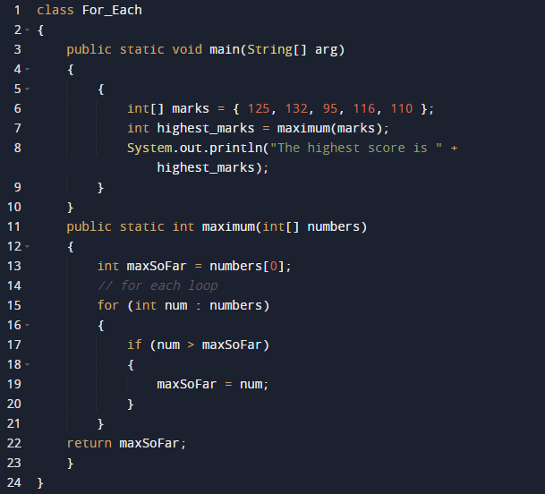

For-each is another array traversing technique like for loop, while loop, do-while loop introduced in Java5.
• It starts with the keyword for like a normal for-loop.
• Instead of declaring and initializing a loop counter variable, you declare a variable that is the same type as the base type of the array, followed by a colon, which is then followed by the array name.
• In the loop body, you can use the loop variable you created rather than using an indexed array element.
• It’s commonly used to iterate over an array or a Collections class (eg, ArrayList)
Syntax:
for (type var : array)
{
statements using var;
}
is equivalent to:
for (int i = 0; i < arr.length; i++)
{
type var = arr[i];
statements using var;
}
Example

Output
The highest score is 132
Limitations of for-each loop
1. For-each loops are not appropriate when you want to modify the array:
for (int num : marks)
{
// only changes num, not the array element
num = num*2;
}
2. For-each loops do not keep track of index. So we can not obtain array index using For-Each loop
for (int num : numbers)
{
if (num == target)
{
return ???; // do not know the index of num
}
}
3. For-each only iterates forward over the array in single steps
// cannot be converted to a for-each loop
for (int i=numbers.length-1; i>0; i--)
{
System.out.println(numbers[i]);
}
4. For-each cannot process two decision making statements at once
// cannot be easily converted to a for-each loop
for (int i=0; i< numbers.length; i++)
{
if (numbers[i] == arr[i])
{ } }